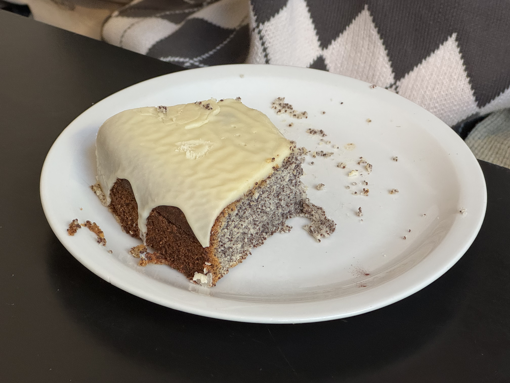
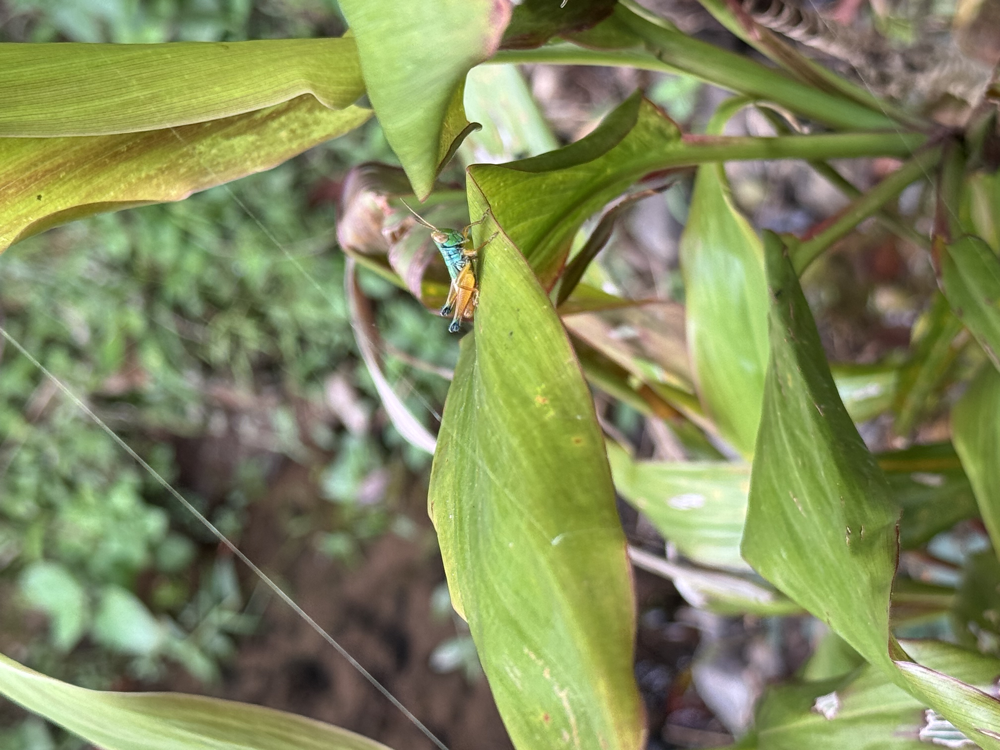
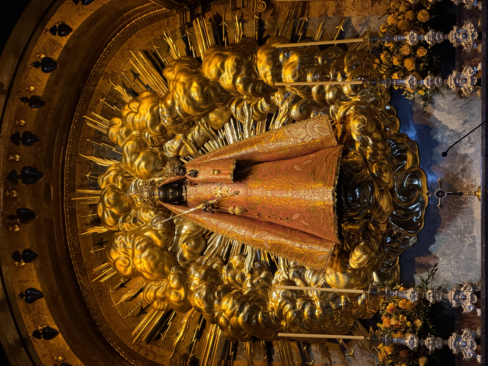

|
5
10
15
20
25
30
35
40
45
50
55
60
65
70
75
80
85
90
95
100
105
110
115
120
125
130
135
140
145
150
155
160
165
170
175
180
|
In dieser Ausgabe der RaubvogelPost geht es um Austausch, Geduld, Last und Vertrauen.
Rainer Maria Rilke/
Briefe an einen jungen Dichter/
Worpswede bei Bremen, 16. Juli 1903/
Vor etwa zehn Tagen habe ich Paris verlassen, recht leidend und müde, und bin in eine große nördliche Ebene gefahren, deren Weite und Stille und Himmel mich wieder gesund machen soll. Aber ich fuhr in einen langen Regen hinein, der heute erst sich ein wenig lichten will über dem unruhig wehenden Land; und ich benutze diesen ersten Augenblick Helle um Sie zu grüßen, lieber Herr.
Sehr lieber Herr Kappus: Ich habe einen Brief von Ihnen lange ohne Antwort gelassen, nicht daß ich ihn vergessen hätte — im Gegenteil: er war von der Art derer, die man wieder liest, wenn man sie unter den Briefen findet, und ich erkannte Sie darin wie aus großer Nähe. Es war der Brief vom zweiten Mai, und Sie erinnern sich seiner gewiß. Wenn ich ihn, wie jetzt, in der großen Stille dieser Ferne lese, dann rührt mich Ihre schöne Sorge um das Leben, mehr noch, als ich das schon in Paris empfunden habe, wo alles anders anklingt und verhallt wegen des übergroßen Lärmes, von dem die Dinge zittern. Hier, wo ein gewaltiges Land um mich ist, über das von den Meeren her die Winde gehen, hier fühle ich, daß auf jene Fragen und Gefühle, die in ihren Tiefen ein eigenes Leben haben, nirgend ein Mensch Ihnen antworten kann; denn es irren auch die Besten in den Worten, wenn sie Leisestes bedeuten sollen und fast Unsägliches. Aber ich glaube trotzdem, daß Sie nicht ohne Lösung bleiben müssen, wenn Sie sich an Dinge halten, die denen ähnlich sind, an welchen jetzt meine Augen sich erholen. Wenn Sie sich an die Natur halten, an das Einfache in ihr, an das Kleine, das kaum einer sieht, und das so unversehens zum Großen und Unermeßlichen werden kann; wenn Sie diese Liebe haben zu dem Geringen und ganz schlicht als ein Dienender das Vertrauen dessen zu gewinnen suchen, was arm scheint: dann wird Ihnen alles leichter, einheitlicher und irgendwie versöhnender werden, nicht im Verstande vielleicht, der staunend zurückbleibt, aber in Ihrem innersten Bewußtsein, Wach-sein und Wissen.
Sie sind so jung, so vor allem Anfang, und ich mochte Sie, so gut ich es kann, bitten, lieber Herr Geduld zu haben gegen alles Ungelöste in ihrem Herzen und zu versuchen, die Fragen selbst liebzuhaben wie verschlossene Stuben und wie Bücher, die in einer sehr fremden Sprache geschrieben sind. Forschen Sie jetzt nicht nach den Antworten, die Ihnen nicht gegeben werden können, weil Sie sie nicht leben könnten. Und es handelt sich darum, alles zu leben. Leben Sie jetzt die Fragen. Vielleicht leben Sie dann allmählich, ohne es zu merken, eines fernen Tages in die Antwort hinein. Vielleicht tragen Sie ja in sich die Möglichkeit, zu bilden und zu formen, als eine besonders selige und reine Art des Lebens; erziehen Sie sich dazu, — aber nehmen Sie das, was kommt, in großem Vertrauen hin, und wenn es nur aus Ihrem Willen kommt, aus irgendeiner Not Ihres Innern, so nehmen Sie es auf sich und hassen Sie nichts. Das Geschlecht ist schwer; ja. Aber es ist Schweres, was uns aufgetragen wurde, fast alles Ernste ist schwer, und alles ist ernst. Wenn Sie das nur erkennen und dazu kommen, sich, aus Anlage und Art, aus Ihrer Erfahrung und Kindheit und Kraft heraus ein ganz eigenes (von Konvention und Sitte nicht beeinflußtes) Verhältnis zu dem Geschlecht zu erringen, dann müssen Sie nicht mehr fürchten, sich zu verlieren und unwürdig zu werden Ihres besten Besitzes.
Die körperliche Wollust ist ein sinnliches Erlebnis, nicht anders als das reine Schauen oder das reine Gefühl, mit dem eine schöne Frucht die Zunge füllt; sie ist eine große, unendliche Erfahrung, die uns gegeben wird, ein Wissen von der Welt, die Fülle und der Glanz alles Wissens. Und nicht, daß wir sie empfangen, ist schlecht; schlecht ist, daß fast alle diese Erfahrung mißbrauchen und vergeuden und sie als Reiz an die müden Stellen ihres Lebens setzen und als Zerstreuung statt als Sammlung zu Höhepunkten. Die Menschen haben ja auch das Essen zu etwas anderem gemacht: Not auf der einen, Überfluß auf der anderen Seite haben die Klarheit dieses Bedürfnisses getrübt, und ähnlich trübe sind alle die tiefen, einfachen Notdürfte geworden, in denen das Leben sich erneuet. Aber der einzelne kann sie für sich klären und klar leben (und wenn nicht der einzelne, der zu abhängig ist, so doch der Einsame). Er kann sich erinnern, daß alle Schönheit in Tieren und Pflanzen eine stille dauernde Form von Liebe und Sehnsucht ist, und er kann das Tier sehen, wie er die Pflanze sieht, geduldig und willig sich vereinigend und vermehrend und wachsend nicht aus physischer Lust, nicht aus physischem Leid, Notwendigkeiten sich neigend, die größer sind als Lust und Leid und gewaltiger denn Wille und Widerstand. O daß der Mensch dieses Geheimnis, dessen die Erde voll ist bis in ihre kleinsten Dinge demütiger empfinge und ernster trüge, ertrüge und fühlte, wie schrecklich schwer es ist, statt es leicht zu nehmen. Daß er ehrfürchtig wäre gegen seine Fruchtbarkeit, die nur eine ist, ob sie geistig oder körperlich scheint; denn auch das geistige Schaffen stammt von dem physischen her, ist eines Wesens mit ihm und nur wie eine leisere, entzücktere und ewigere Wiederholung leiblicher Wollust. »Der Gedanke, Schöpfer zu sein, zu zeugen, zu bilden« ist nichts ohne seine fortwährende, große Bestätigung und Verwirklichung in der Welt, nichts ohne die tausendfältige Zustimmung aus Dingen und Tieren, — und sein Genuß ist nur deshalb so unbeschreiblich schön und reich, weil er voll ererbter Erinnerungen ist aus Zeugen und Gebären von Millionen. In einem Schöpfergedanken leben tausend vergessene Liebesnächte auf und erfüllen ihn mit Hoheit und Höhe. Und die in den Nächten zusammenkommen und verflochten sind in wiegender Wollust, tun eine ernste Arbeit und sammeln Süßigkeiten an, Tiefe und Kraft für das Lied irgendeines kommenden Dichters, der aufstehen wird, um unsägliche Wonnen zu sagen. Und rufen die Zukunft herbei; und wenn sie auch irren und sich blindlings umfassen, die Zukunft kommt doch, ein neuer Mensch erhebt sich, und auf dem Grunde des Zufalls, der hier vollzogen scheint, erwacht das Gesetz, mit dem ein widerstandsfähiger kräftiger Samen sich durchdrängt zu der Eizelle, die ihm offen entgegenzieht. Lassen Sie sich nicht beirren durch die Oberflächen; in den Tiefen wird alles Gesetz. Und die das Geheimnis falsch und schlecht leben (und es sind sehr viele), verlieren es nur für sich selbst und geben es doch weiter wie einen verschlossenen Brief, ohne es zu wissen. Und werden Sie nicht irre an der Vielheit der Namen und an der Kompliziertheit der Fälle. Vielleicht ist über allem eine große Mutterschaft, als gemeinsame Sehnsucht. Die Schönheit der Jungfrau, eines Wesens, »das (wie Sie so schön sagen) noch nichts geleistet hat«, ist Mutterschaft, die sich ahnt und vorbereitet, ängstigt und sehnt. Und der Mutter Schönheit ist dienende Mutterschaft, und in der Greisin ist eine große Erinnerung. Und auch im Mann ist Mutterschaft, scheint mir, leibliche und geistige; sein Zeugen ist auch eine Art Gebären, und Gebären ist es, wenn er schafft aus innerster Fülle. Und vielleicht sind die Geschlechter verwandter, als man meint, und die große Erneuerung der Welt wird vielleicht darin bestehen, daß Mann und Mädchen sich, befreit von allen Irrgefühlen und Unlüsten, nicht als Gegensätze suchen werden, sondern als Geschwister und Nachbarn und sich zusammentun werden als Menschen, um einfach, ernst und geduldig das schwere Geschlecht, das ihnen auferlegt ist, gemeinsam zu tragen.
Aber alles, was vielleicht einmal vielen möglich sein wird, kann der Einsame jetzt schon vorbereiten und bauen mit seinen Händen, die weniger irren. Darum, lieber Herr, lieben Sie Ihre Einsamkeit, und tragen Sie den Schmerz, den sie Ihnen verursacht, mit schön klingender Klage. Denn die Ihnen nahe sind, sind fern, sagen Sie, und das zeigt, daß es anfängt, weit um Sie zu werden. Und wenn Ihre Nähe fern ist, dann ist Ihre Weite schon unter den Sternen und sehr groß; freuen Sie sich Ihres Wachstums, in das Sie ja niemanden mitnehmen können, und seien Sie gut gegen die, welche zurückbleiben, und seien Sie sicher und ruhig vor ihnen und quälen Sie sie nicht mit Ihren Zweifeln und erschrecken Sie sie nicht mit Ihrer Zuversicht oder Freude, die sie nicht begreifen könnten. Suchen Sie sich mit ihnen irgendeine schlichte und treue Gemeinsamkeit, die sich nicht notwendig verändern muß, wenn Sie selbst anders und anders werden; lieben Sie an ihnen das Leben in einer fremden Form und haben Sie Nachsicht gegen die alternden Menschen, die das Alleinsein fürchten, zu dem Sie Vertrauen haben. Vermeiden Sie, jenem Drama, das zwischen Eltern und Kindern immer ausgespannt ist, Stoff zuzuführen; es verbraucht viel Kraft der Kinder und zehrt die Liebe der Alten auf, die wirkt und wärmt, auch wenn sie nicht begreift. Verlangen Sie keinen Rat von ihnen und rechnen Sie mit keinem Verstehen; aber glauben Sie an eine Liebe, die für Sie aufbewahrt wird wie eine Erbschaft, und vertrauen Sie, daß in dieser Liebe eine Kraft ist und ein Segen, aus dem Sie nicht herausgehen müssen, um ganz weit zu gehen!
Es ist gut, daß Sie zunächst in einen Beruf münden, der Sie selbständig macht und Sie vollkommen auf sich selbst stellt in jedem Sinne. Warten Sie geduldig ab, ob Ihr innerstes Leben sich beschränkt fühlt durch die Form dieses Berufes. Ich halte ihn für sehr schwer und für sehr anspruchsvoll, da er von großen Konventionen belastet ist und einer persönlichen Auffassung seiner Aufgaben fast keinen Raum läßt. Aber Ihre Einsamkeit wird Ihnen auch inmitten sehr fremder Verhältnisse Halt und Heimat sein, und aus ihr heraus werden Sie alle Ihre Wege finden. Alle meine Wünsche sind bereit, Sie zu begleiten, und mein Vertrauen ist mit Ihnen.
Ihr:
Rainer Maria Rilke
|
5
10
15
20
25
30
35
40
45
50
55
60
65
70
75
80
85
90
95
100
105
110
115
120
125
130
135
140
145
150
155
160
165
170
175
180
|




|